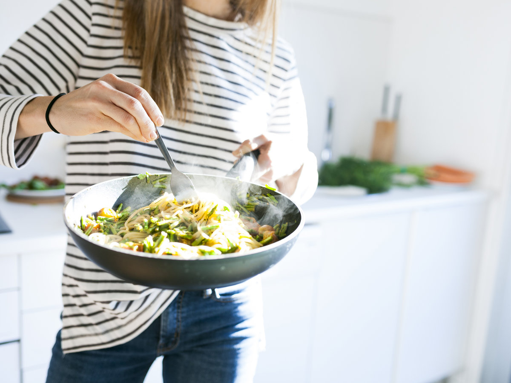

What do you want to cook
Cooking or cookery is the art, technology, science and craft of preparing food for
consumption.
Sushi is a Japanese dish of prepared vinegared rice, usually with some sugar and salt, accompanying a variety of ingredients, such as seafood, vegetables, and occasionally tropical fruits.
 How to cook soups
Soup is a primarily liquid food, generally served warm or hot (but may be cool or cold), that is made by combining ingredients of meat or vegetables with stock, or water.
How to cook soups
Soup is a primarily liquid food, generally served warm or hot (but may be cool or cold), that is made by combining ingredients of meat or vegetables with stock, or water.
A salad is a dish consisting of a mixture of small pieces of food, usually vegetables. However, different varieties of salad may contain virtually any type of ready-to-eat food.